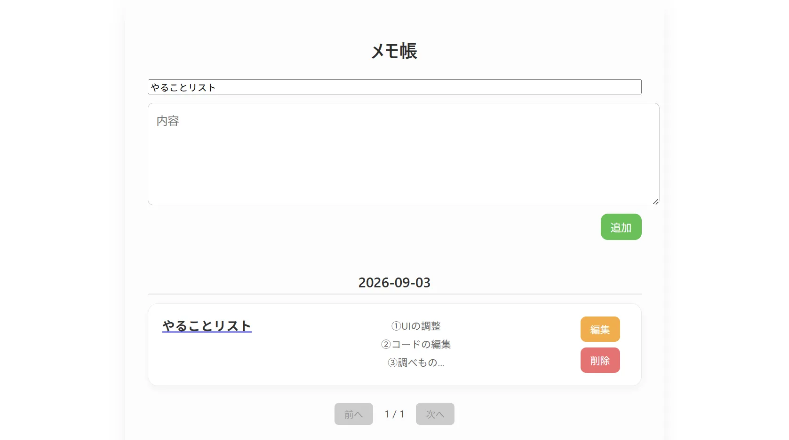

React / Next.js , Django REST API
Memo App

Overview
React の入門として作成したシンプルなメモアプリです。
メモの追加・編集・削除ができる基本的な CRUD 機能を備えており、
React のコンポーネント構造や状態管理の理解を深めることを目的としています。
Tech Stack
- React
- JavaScript
- Python / Django REST API
- LocalStorage（データ保存）
Features
- メモの追加・編集・削除
- ローカルストレージによるデータ永続化
- シンプルで見やすい UI
- コンポーネント分割による保守性向上
- React Hooks（useState / useEffect）を使用した状態管理
- Supabase（PostgreSQL / DBホスティング）
Key Points
React の基礎であるコンポーネント設計、状態管理、イベント処理を
実際に手を動かしながら理解するために作成しました。
小規模ながら実用的なアプリとして動作します。